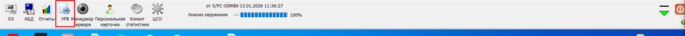
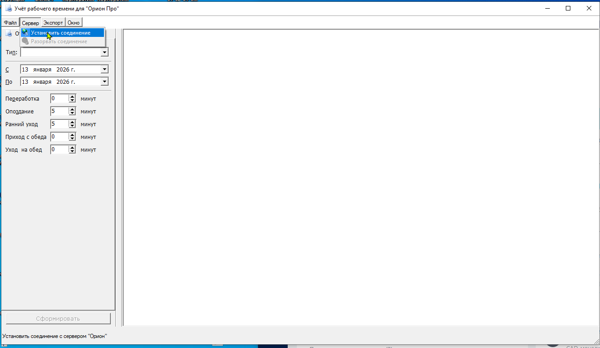
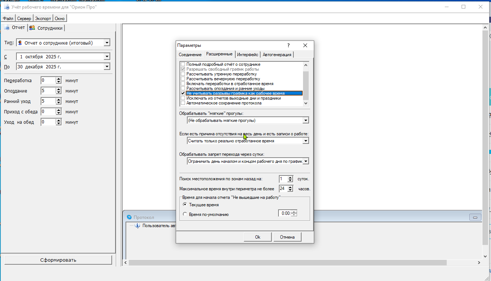
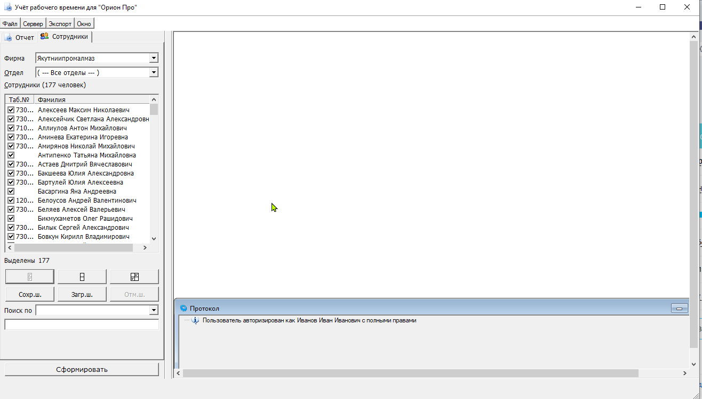
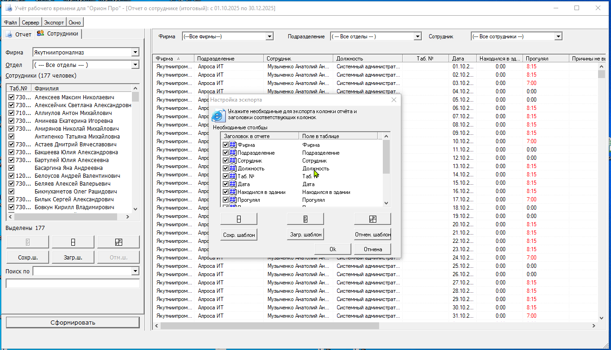

Перед использованием надстройки необходимо выгрузить отчет из системы СКУД. Выполните следующие шаги:
-
Зайдите в УРВ (Учет рабочего времени)

Рисунок: Вход в модуль УРВ
-
Нажмите на вкладке Сервер → Установить соединение

Рисунок: Установка соединения с сервером
-
Выберите Файл → Параметры и установите параметры как на скриншоте:

Рисунок: Настройка параметров в УРВ
- Выберите тип отчета: "Отчет о сотруднике (итоговый)"
-
На вкладке "Сотрудники" выберите необходимых сотрудников и нажмите "Сформировать"

Рисунок: Выбор сотрудников для отчета
-
Нажмите на кнопку "Экспорт → Экспорт в Microsoft Excel"

Рисунок: Экспорт отчета в Excel
-
Установите параметры экспорта

Рисунок: Параметры экспорта в Excel
После выполнения этих шагов у вас будет файл Excel с данными из СКУД, который можно обработать с помощью надстройки.